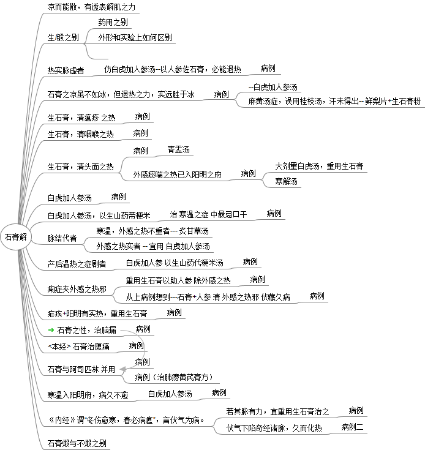

石膏解

石膏解
凉而能散，有透表解肌之力
生/锻之别
药用之别
外形和实验上如何区别
热实脉虚者
仿白虎加人参汤--以人参佐石膏，必能退热
病例
石膏之凉虽不如冰，但退热之力，实远胜于冰
病例
--白虎加人参汤
麻黄汤症，误用桂枝汤，汗未得出-- 鲜梨片+生石膏粉
生石膏，清瘟疹 之热
病例
生石膏，清咽喉之热
病例
生石膏，清头面之热
病例
青盂汤
外感痰喘之热已入阳明之府
病例
大剂量白虎汤，重用生石膏
寒解汤
白虎加人参汤
病例
白虎加人参汤，以生山药带粳米
治 寒温之症 中最忌口干
病例
脉结代者
寒温，外感之热不重者--- 炙甘草汤
外感之热实者 -- 宜用 白虎加人参汤
产后温热之症剧者
白虎加人参 以生山药代粳米汤
病例
痢症夹外感之热邪
重用生石膏以助人参 除外感之热
病例
从上病例想到---石膏+人参 清 外感之热邪 伏藏久病
病例
疟疾+阳明有实热，重用生石膏
病例
石膏之性，治脑漏
病例
<本经> 石膏治腹痛
病例
石膏与阿司匹林 并用
病例
病例（治肺痨黄芪膏方）
寒温入阳明府，病久不愈
白虎加人参汤
病例
《内经》谓“冬伤愈寒，春必病瘟”，言伏气为病。
若其脉有力，宜重用生石膏治之
病例
伏气下陷奇经诸脉，久而化热
病例二
石膏煅与不煅之别